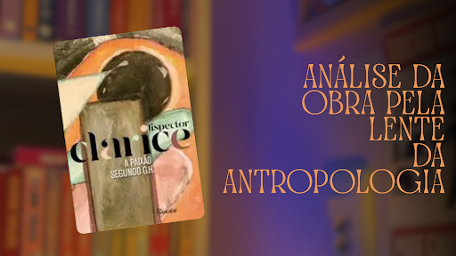

Nesta atividade, lemos o livro A paixão segundo G.H., de Clarice Lispector, com a proposta de enxergar a obra por uma nova perspectiva. O grupo escolhido foi o da antropologia, e nosso objetivo foi interpretar os personagens, seus sentimentos e as transformações que eles vivenciam ao longo da história. A atividade incentivou uma leitura mais profunda, indo além do básico, especialmente ao explorar questões como identidade e a forma como o “eu” é construído. No geral, achei a atividade muito boa e divertida, principalmente por permitir essa mistura de interpretação com criatividade.
H4 - Reconhecer a pluralidade de manifestações artísticas e
culturais como
forma de integração entre pessoas e entre diferentes grupos sociais e étnicos.
H22 - Produzir textos técnicos de acordo com uma estrutura estabelecida.
Nesta atividade, revisamos as escolas literárias brasileiras, desde o Quinhentismo até o Simbolismo, a proposta foi uma forma diferente de estudar, tornando o conteúdo mais dinâmico e interativo. Durante o processo, tivemos que organizar as principais características de cada escola literária, resumindo as informações de forma clara para transformar em perguntas e desafios dentro do jogo. Isso ajudou a reforçar o entendimento dos conteúdos e a fixar melhor o conteúdo. Além disso, a atividade também desenvolveu a criatividade. No geral, foi uma experiência bem produtiva e diferente das revisões tradicionais, o que tornou o aprendizado mais leve e eficiente.
H15 - Produzir trabalhos individuais e coletivos, explorando materiais e técnicas ligados ao universo das composições artísticas e de práticas corporais.